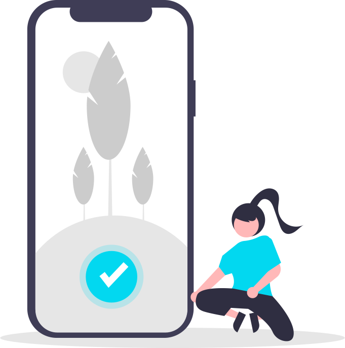
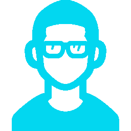
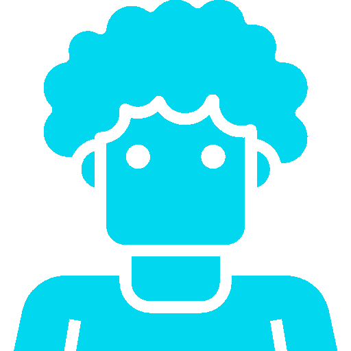
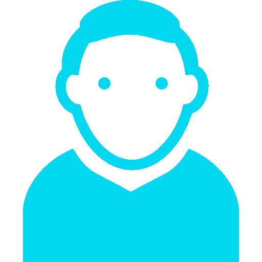
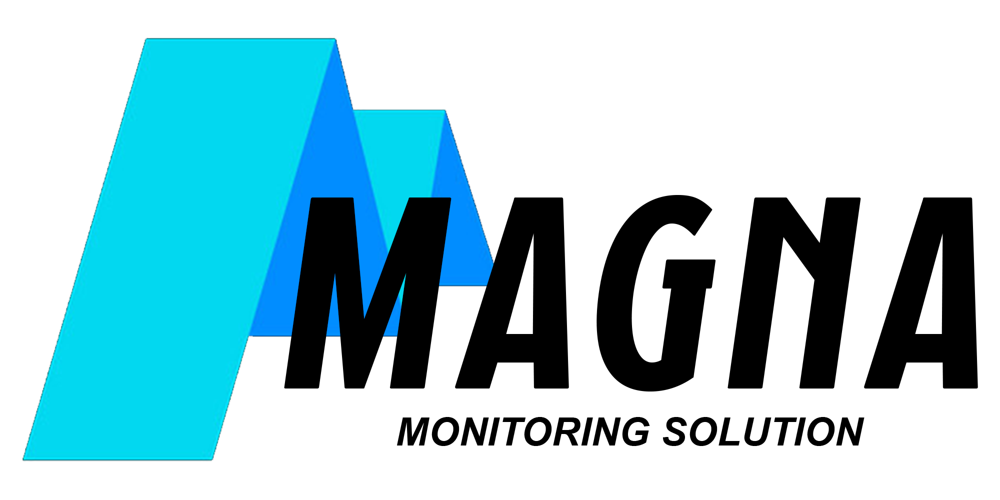

Serviços
O que podemos te oferecer

Agilidade
Te oferecemos a chance de tornar toda a logística mais facilidata e ágil.

Monitoramento
Todo o monitoramento da onde está o seu sistema.

Alertas
Todo um sistema de alertas para não ficar naquela necessidade de olhar o sistema 24/7

Suporte
Todo um suporte focado e pensado apenas em uma coisa: te ajudar!
Projeto
O que é o nosso sistema de monitoramento
Monitorar
Com o nosso sistema monitorar nunca foi tão fácil, com o sistema coletando os dados e apresentando as informações em dashboard's a visualização ficou simples e dinâmica, trazendo mais facilidae para fazer a análise.Saiba mais

Alertar
Com o sistema de alertas, a sua empresa terá um aviso caso algum totem demonstre falhas, dessa forma poderá mandar a equipe de suporte para resolver o problema em menos tempo, para que tenha menos prejuízo e tornar a máquina operante o mais rápido possível.Saiba mais
Sem desespero
Graças ao sistema de monitoramento em tempo real, a equipe técnica perceberá que terá uma falha antes de acontecer, dessa forma a equipe poderá atuar antes que a máquina pare.Saiba mais

Time
Um pouco sobre a nossa equipe

Gustavo Moraes
Desenvolvedor

Lucas Osakwe
Desenvolvedor
Renan Oliveira
Desenvolvedor
Lucas Lacerda
Desenvolvedor

Vinicius Augusto
Desenvolvedor
Sobre nós
Propósito
A Magna surgiu a partir de um projeto de faculdade e que hoje é uma empresa consolidada no mercado,
atuando na area de monitoramento de totens e caixas de autoatendimento, forncendo ajuda a restaurantes e mercados
desde 2022.
Saiba mais
Saiba mais
